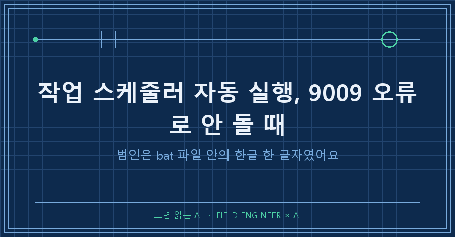
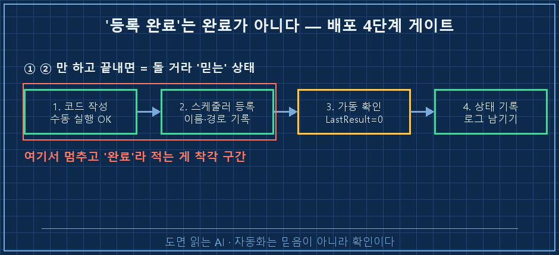
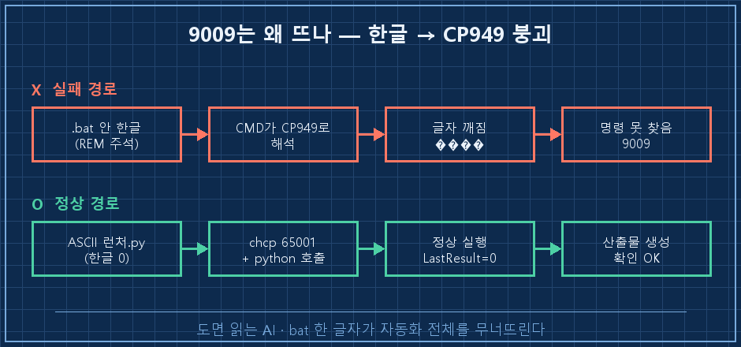
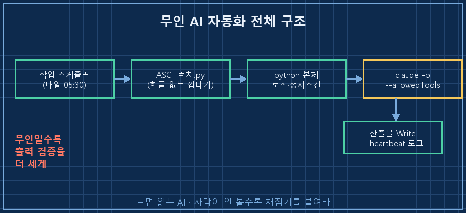

파이썬 스크립트는 손으로 돌리면 잘 되는데, 작업 스케줄러에 올리면 안 돈다는 분들 많죠?
저도 그런 줄 알았거든요. 등록만 해두면 알아서 도는 줄로요.
근데 "등록 완료"랑 "실제로 돈다"는 완전히 다른 물건이더라고요.
먼저 결론부터 말씀드릴게요.
작업 스케줄러 자동 실행이 9009 오류로 멈추는 건 십중팔구 .bat 파일 안에 들어간 한글 때문이에요.
해결은 두 가지입니다. bat에서 한글을 전부 빼거나, ASCII로만 된 런처를 하나 두고 거기서 파이썬을 부르는 거죠.
그리고 등록한 다음엔 반드시 LastResult 값으로 진짜 돌았는지 눈으로 확인해야 해요. 이게 핵심입니다.

저는 수소 설비 제어판넬을 설계하고, PLC 코드를 짜고, 현장 가서 결선을 확인하는 15년차 제어 엔지니어예요.
요즘은 반복 업무를 파이썬이랑 AI한테 넘겨서 밤이고 주말이고 알아서 돌게 만들어두는데, 그 과정에서 이 9009한테 아주 제대로 데였습니다.
오늘은 그 삽질을 따라 하면 안 겪도록 정리해볼게요.
1. "등록 완료"는 완료가 아니었어요
처음엔 순서가 이랬어요.
파이썬 짜고, 손으로 한 번 돌려보고, 잘 되니까 스케줄러에 등록.
그리고 끝. 완료 표시.
다음 날 결과물을 보러 갔더니 아무것도 안 생겨 있더라고요.
스케줄러는 분명 "준비 완료"라고 떠 있는데 산출물이 없어요.
그때 배운 게 이겁니다. 코드가 도는 것과, 스케줄러가 그 코드를 도는 건 별개예요.
그래서 저는 자동 실행이 필요한 건 무조건 4단계로 나눠서 확인하기로 했어요.

3단계, 그러니까 LastResult로 실제 실행 결과를 확인하는 걸 건너뛰면 그냥 "돌 거라 믿는" 상태예요.
믿음은 자동화가 아니잖아요.
2. 범인은 한글 한 글자였어요
LastResult를 열어봤더니 9009가 찍혀 있었어요.
9009는 윈도우가 "명령이나 실행 파일을 못 찾겠다"고 할 때 뱉는 코드예요.
근데 경로는 분명히 맞거든요. 손으로는 잘 돌고요. 그래서 한참 헤맸습니다..
범인은 .bat 파일 안에 넣어둔 한글 주석 한 줄이었어요.
@echo off
REM 매일 아침 자동 실행 스크립트
python daily_task.py윈도우 CMD의 기본 인코딩은 CP949예요.
그런데 요즘 에디터는 파일을 UTF-8로 저장하죠.
그러면 UTF-8로 쓴 한글이 CP949로 읽히면서 깨지고, CMD가 그 깨진 글자를 명령어로 해석하려다 "그런 명령 없다"며 9009를 던지는 거예요.
한글 한 글자가 배치 파일 전체를 무너뜨린 거죠.

해법은 세 가지예요. 셋 다 적용하는 걸 추천해요.
@echo off
chcp 65001 > nul
python daily_task.py- bat 안에 한글 절대 금지. 주석(REM)까지 전부 영어로.
- 첫 줄에 chcp 65001 > nul을 넣어서 파이썬이 한글을 출력해도 안 깨지게.
- bat은 파이썬 호출만 하는 최소한의 껍데기로. 로직과 설명은 전부 .py 안에 두기.
한글 경로가 꼭 필요하면 bat을 쓰지 말고, ASCII 이름의 런처 파이썬을 하나 만들어서 거기서 진짜 스크립트를 subprocess로 부르는 게 제일 깔끔했어요.
3. 따라 하면 되는 작업 스케줄러 자동 실행 4단계
여기서부터는 그대로 따라 하시면 됩니다. (2026-07 기준, 윈도우 10/11 + 파이썬 3.12)
1) 등록 — 관리자 파워셸이나 CMD에서:
schtasks /create /tn "MyDailyTask" /tr "C:\auto\run.bat" /sc daily /st 05:302) 등록 확인 — 진짜 들어갔는지 봅니다:
schtasks /query /tn "MyDailyTask"3) 가동 확인 — 이게 제일 중요해요. 수동으로 한 번 트리거하고 결과 코드를 봅니다:
schtasks /run /tn "MyDailyTask"
Get-ScheduledTaskInfo -TaskName "MyDailyTask"여기서 LastTaskResult 값을 반드시 확인하세요.
| LastResult | 의미 | 대처 |
|---|---|---|
| 0 | 성공 | 통과 |
| 1 | 실행 중 에러 | 스크립트 로그 확인 |
| 9009 | 명령/파일 못 찾음 | bat 한글·경로 점검 |
| 267011 | 한 번도 실행 안 됨 | 등록 자체 문제 |
4) 성공 판정 — LastResult가 0이고, 결과물 파일이 실제로 생겼으면 그때 "완료"입니다.
저는 마지막에 상태 로그 파일 하나를 꼭 남겨요. 나중에 "어제 돌긴 했나"를 1초 만에 확인하려고요.
{ "date": "2026-07-13", "time": "19:40:00", "status": "SKIP", "detail": "일일 상한 도달 (2/2)" }이렇게 성공이든 스킵이든 이유까지 한 줄로 남겨두면, 무인으로 굴러도 뭐가 언제 왜 그랬는지 추적이 됩니다.
4. AI까지 무인으로 굴리는 한 줄
파이썬은 AI 모델을 직접 못 불러요. 그런데 방법이 있더라고요.
claude -p 같은 headless 모드를 subprocess로 부르면 스케줄러 안에서 모델 작업도 무인으로 돌아가요.
subprocess.run(
["claude", "-p", prompt,
"--allowedTools", "Read,Glob,Grep,Write",
"--output-format", "text"],
capture_output=True, text=True, timeout=900)--allowedTools로 허용 도구만 미리 지정해두면 대화창 없이도 권한 승인 없이 돌아가요.
결과를 지정한 경로에 Write시키고, 그 파일이 생겼는지로 성공을 판정하면 됩니다.
이미 처리한 건 파일이 있으니 건너뛰게(멱등) 짜두면, 매일 돌아도 중복이 안 생기고요.

한 가지만 당부할게요.
무인일수록 출력 검증을 더 세게 걸어야 해요.
사람이 안 보는 사이에 AI가 그럴듯한 오답을 내면, 그게 그대로 데이터에 쌓여서 나중에 정답인 척 굴거든요.
그래서 저는 산출물을 바로 안 믿고, 출처 없는 단정은 "미검증"으로 강등시키는 게이트를 하나 더 답니다.
자주 묻는 질문 (FAQ)
Q. 손으로는 되는데 스케줄러에서만 9009가 떠요.
A. 거의 확정적으로 bat 인코딩입니다. bat 안 한글을 지우고 chcp 65001을 첫 줄에 넣어보세요. 그래도 안 되면 실행 계정 권한과 경로의 백슬래시를 확인하고요.
Q. LastResult가 267011이에요.
A. 한 번도 실행이 안 됐다는 뜻이라 등록 자체 문제예요. schtasks /query로 트리거 시각과 실행 경로가 맞는지부터 보세요.
Q. 꼭 4단계까지 봐야 하나요? 등록되면 되는 거 아녜요?
A. 저도 그렇게 믿다가 하루치 결과물을 통째로 날렸어요.. LastResult 0을 눈으로 본 순간까지가 완료입니다.
오늘의 체크리스트
- [ ] bat 안에 한글(주석 포함) 0건인가
- [ ] bat 첫 줄에 chcp 65001 > nul 있는가
- [ ] schtasks /run 후 LastResult = 0 확인했는가
- [ ] 산출물 파일이 실제로 생겼는가
- [ ] 성공/스킵 이유를 로그 한 줄로 남겼는가
정리하면 이래요.
작업 스케줄러 자동 실행이 안 도는 건 대개 코드가 아니라 bat 한 글자와 확인 습관 문제예요.
한글을 빼고, LastResult를 눈으로 보고, 로그 한 줄을 남기면 무인 자동화가 비로소 믿을 만해집니다!
다음 글에서는 이렇게 돌려둔 자동화가 성공한 척 조용히 실패하던 이야기를 써볼게요.
여러분은 자동화를 등록한 뒤에, 진짜 돌았는지 뭘로 확인하고 계세요?
더 깊은 현장 자동화 기록은 makefield.ai 에 모으고 있습니다.